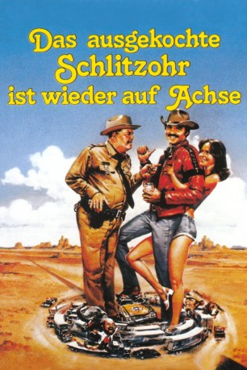

#4840 Ein Ausgekochtes Schlitzohr ist wieder auf Achse
Alternativ: Smokey and the Bandit II
 
 IMDB-Wertung: 5.1 / 10
IMDB-Wertung: 5.1 / 10  Metascore: 0
Metascore: 0 
Fortsetzung des Truckerspasses mit Burt Reynolds aus dem Jahr 1980. Bandit ist inzwischen ziemlich heruntergekommen. Seine Freundin Carrie hat ihn verlassen. Doch Kumpel Schneemann bringt ihn wieder auf die Beine. Ein Elefant soll innerhalb von 24 Stunden abgeholt werden. Also gehen die beiden Freunde wieder auf Achse und Sheriff Buford T. Justice ist ihnen auch bald auf den Versen.
Jahr: 1980
Dauer: 96 Minuten
FSK: 12
Land: USA Studio: Universal® An MCA CompanyTonspuren: DD2.0 - , DD2.0 - ,
Untertitel: Deutsch, Englisch, Französisch,
Auflösung: 1080p (1920x1040) Größe: 9543 MB
Genre: Action, Komödie
Regisseur: Hal Needham
Drehbuch: Sydney Boehm
Soundtrack:
Darsteller:
Datei: X:\3-Trilogie(A-F)\Ausgekochtes Schlitzohr\Ausgekochtes Schlitzohr ist wieder auf Achse, Ein (1980, FSK12, 1920x1040).mkv seit 23.11.2016
Festplatte: HD Collection-2(A-Z)-3(A-M)
 Alle Filme aus Gruppe '3-Trilogie(A-F)\Ausgekochtes Schlitzohr'
Alle Filme aus Gruppe '3-Trilogie(A-F)\Ausgekochtes Schlitzohr'